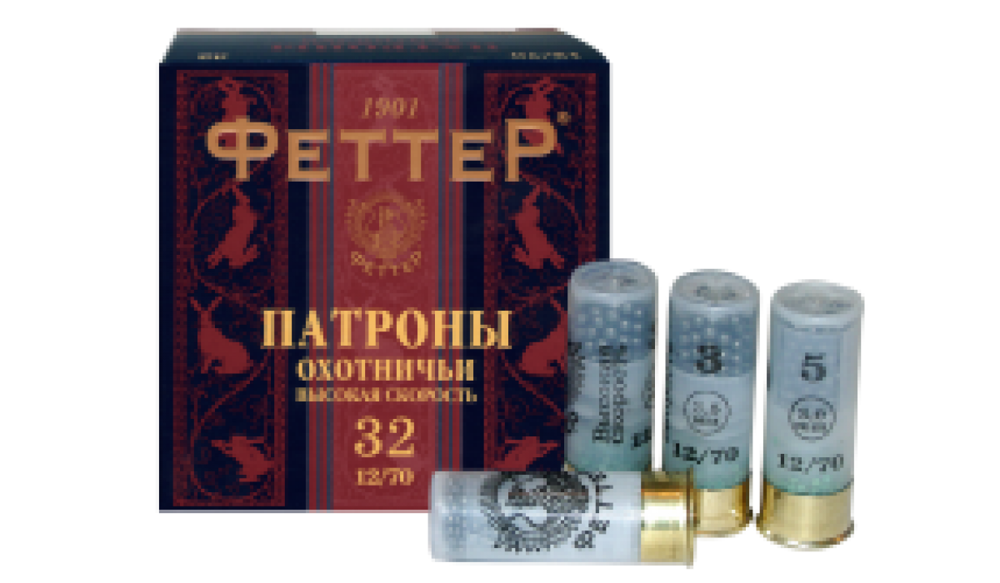

Оружейный салон
| Официальны представитель Benelli в россии Постоянная модернизация производства, разработка новых технологий, поиск оригинальных конструкторских решений, использование современных материалов, высокая точность механической обработки и неповторимый дизайн – вот основные составляющие успеха компании «Бенелли». Её изделия, самозарядные охотничьи ружья, отличаются высоким качеством изготовления, широким использованием современных технологий и материалов, выдающейся надёжностью и утончённым стилем. Не случайно, о ружье «Бенелли» мечтают многие охотники во всём мире. Благодаря передовой организации производства и применению самых жёстких стандартов качества, эти ружья обладают отличным боем и превосходными потребительскими свойствами. Решающее значение в достижении коммерческого успеха имело повышенное внимание руководства к оснащению предприятия современным высокоточным оборудованием, автоматизированными средствами управления и контроля качества, а также крупные капиталовложения в НИОКР. Программа постоянного повышения квалификации работников всех уровней способствует техническому совершенствованию изделий и повышению качества обслуживания. |
|
Патроны на любое оружие в наличии и под заказ  Патроны – это боеприпасы стрелкового оружия. В нашем магазине вы всегда найдете большой выбор различных боеприпасов на гладкоствольное, нарезное и травматическое оружие.Патроны и боеприпасы могут быть боевыми и вспомогательными. Боевые – это те, которые имеют боевые или специальные пули. Вспомогательные – соответственно холостые пули, спортивные, проверочные и учебные.Баллистические данные и мощность делят патроны на револьверные и пистолетные, автоматные, крупнокалиберные, боеприпасы к гладкоствольному оружию и винтовочно-пулеметные.Главный элемент патрона – пуля.Оружие и боеприпасы - абсолютно неразделимые вещи.Имея хорошее вооружение в виде отличного ружья для охоты или пистолета для самообороны, всегда есть необходимость в закупке хорошего качества патронов.У стрелкового оружия калибр только до 23 мм, свыше этого показателя – тип оружия артиллерия. Самый распространенный из них для стрелкового оружия - 12 калибр.Как видите, вариантов много и разобраться в этом всем многообразии может помочь вам консультант нашего магазина. Грамотная и своевременная консультация – ваши сэкономленные нервы, деньги и время |